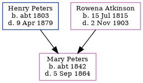

Jane Marion McBeath (née Peters) 1850 - 1943
[ Home ] | [ Calendar ] | [ Surnames Index ] | [ Census Index ] | [ Family History ]The child of Henry Peters and Rowena Atkinson, Jane Peters, the second cousin three-times-removed on the father's side of Nigel Horne, was born in Peters Mills, Rexton, Kent, New Brunswick, Canada on Apr 23, 18501,2,3 and had 9 children with Donald McBeath (a farmer): Rowena Isabella, Henry P, Alexander Wathen, Richmond Noble, Mary Elizabeth Grace, Euphemia Alberta, Elizabeth Arletta, Leigh Melbourn and Jane Irene, along with 1 surviving child.
During her life, she was living in Richibucto, Kent, New Brunswick, Canada in 18611, in 18812 (the same place as her father had been living in 1861) and in 19114 (the same place as her mother had been living in 1861) which is where she died on Jan 5, 1943.
Parents
- Henry Warman was born c. 1803
- Rowena Noble Charlotte was born on Jul 15, 1815
Children
- Rowena Isabella was born c. 1874
- Alexander Wathen was born on Jun 4, 1877
- Richmond Noble was born on Dec 3, 1878
- Mary Elizabeth Grace was born on Jul 13, 1881
- Euphemia Alberta was born on Jun 4, 1886
- Elizabeth Arletta was born on Oct 20, 1888
- Leigh Melbourn was born on Apr 7, 1891
- Jane Irene was born on Aug 9, 1893
Citations
- 1861 Census of Canada Ancestry.com Operations Inc (Relation to Head of House: Daughter)
- 1881 Census of Canada Ancestry.com Operations Inc (Marital Status: Married)
- Canada Census 1861 - Findmypast
- Canada Census 1911 - Findmypast (was the wife of the head of the household)
Media
Canada Census 1911 - CAN/CENSUS/1911/01307387
Canada Census 1861 - CAN/CENSUS/1861/02668127
Family Tree
Generated by ged2site. Last updated on Jun 11, 2024